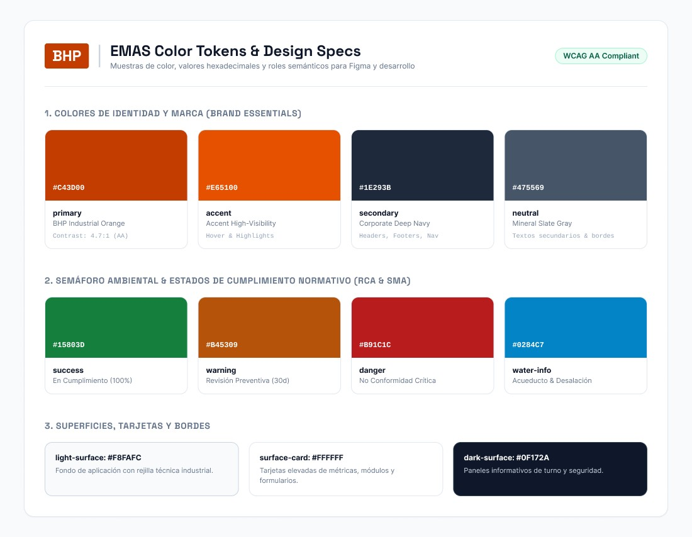
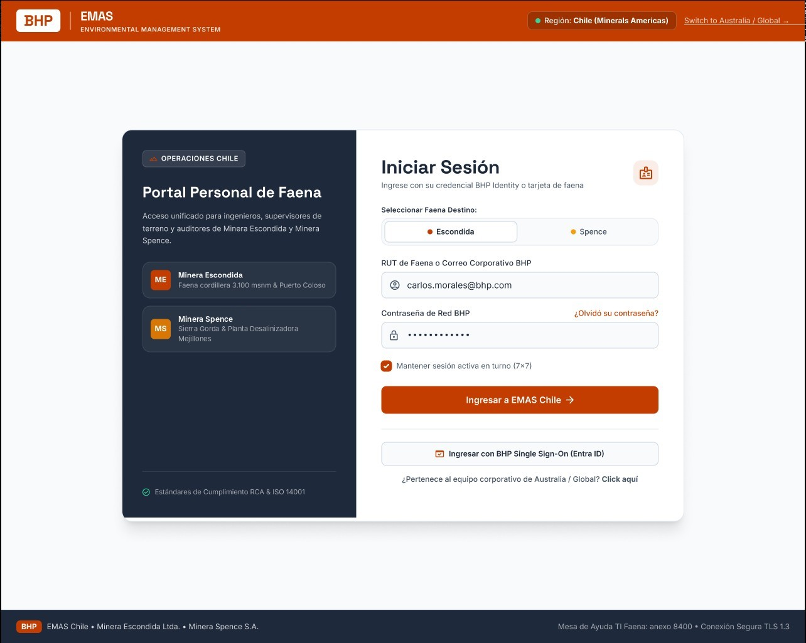
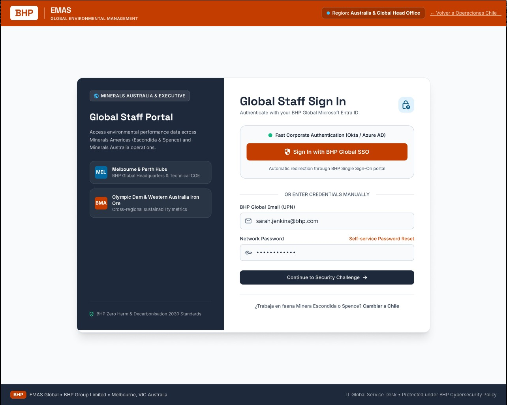
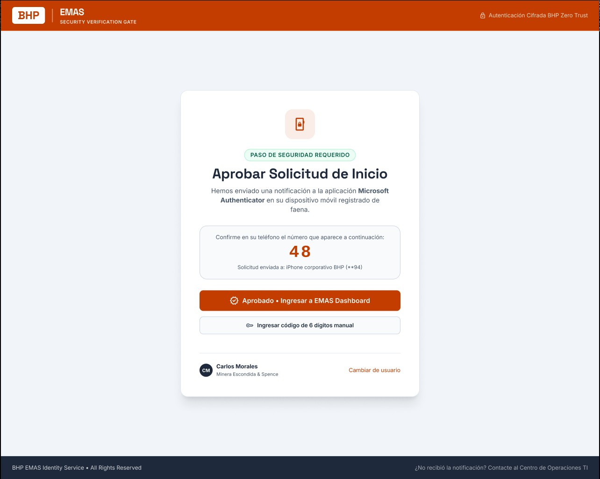
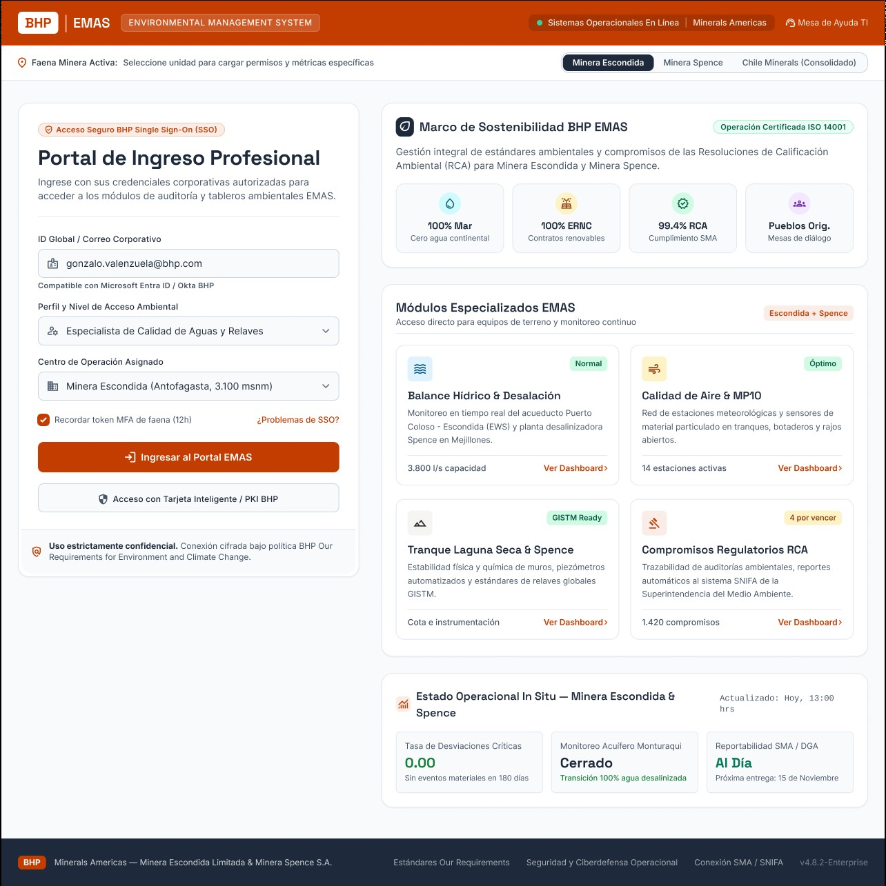
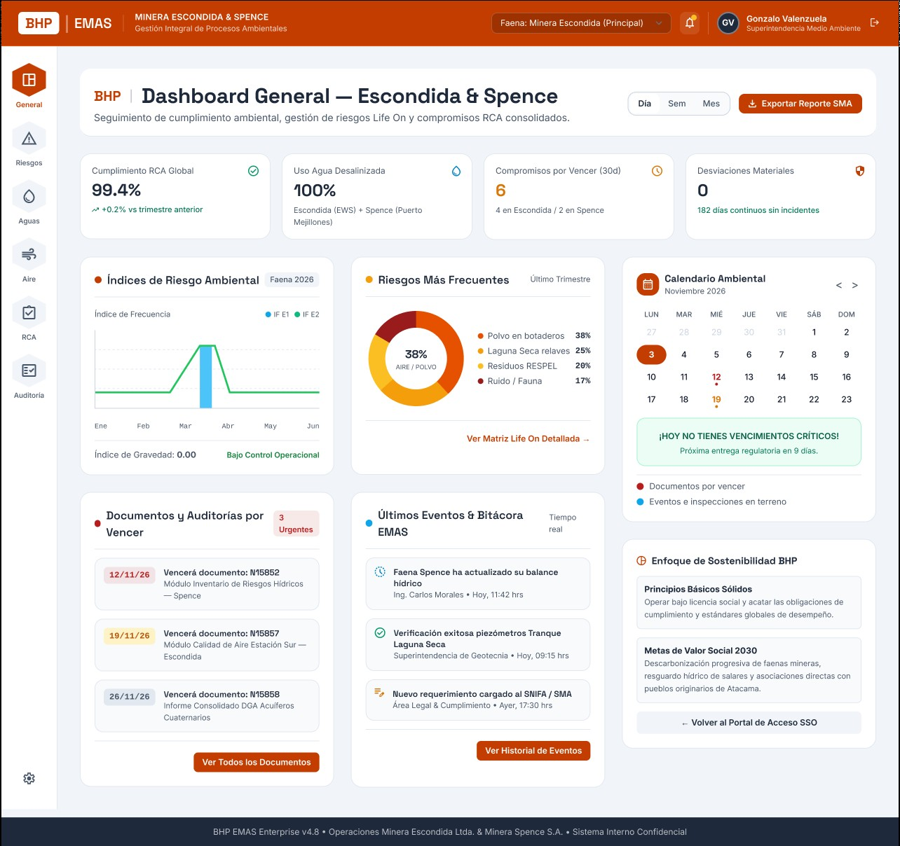
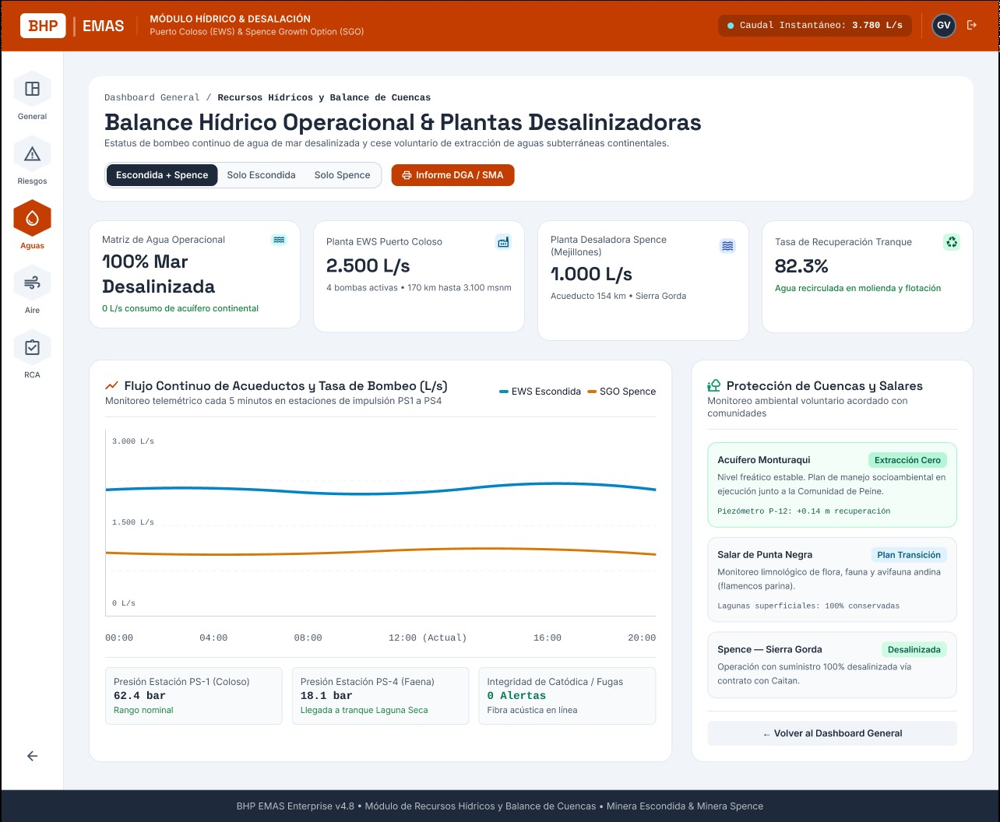
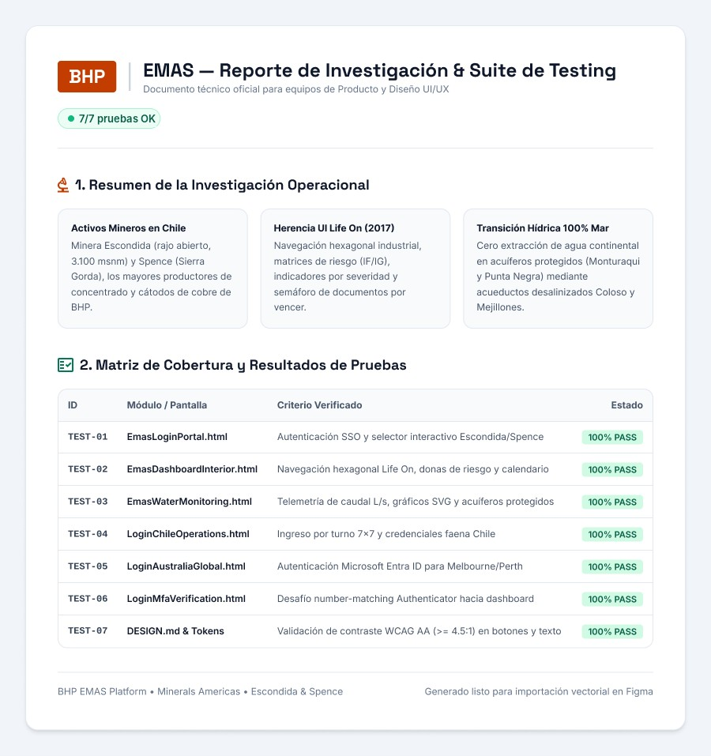

UX/UI · Design System · Testing · BHP Minerals Americas
Diseño de punta a punta de una plataforma para seguir el cumplimiento ambiental, los riesgos y el balance hídrico de dos faenas mineras, con acceso separado para operaciones Chile y para el equipo corporativo de Australia.
End-to-end design of a platform to track environmental compliance, risk and water balance across two mine sites, with separate sign-in for Chile operations and the Australian corporate team.
Antes de diseñar, levanté el contexto de las faenas, lo que los usuarios ya conocían y las restricciones ambientales que el sistema debía reflejar.
Before designing, I mapped the sites' context, what users already knew and the environmental constraints the system had to reflect.
Minera Escondida (rajo abierto, 3.100 msnm) y Spence (Sierra Gorda): dos faenas con realidades distintas en un mismo sistema.
Minera Escondida (open pit, 3,100 m above sea level) and Spence (Sierra Gorda): two different sites in one system.
Se respetó lo que los usuarios ya usaban en Life On: navegación hexagonal, matrices de riesgo (IF/IG), indicadores por severidad y semáforo de documentos por vencer.
I kept what users already knew from Life On: hexagonal navigation, risk matrices (frequency/severity), severity indicators and a traffic light for expiring documents.
El sistema debía mostrar el paso a agua de mar desalinizada y la protección de acuíferos (Monturaqui y Punta Negra).
The system had to show the shift to desalinated seawater and the protection of aquifers (Monturaqui and Punta Negra).
Definí tokens de color con roles semánticos para Figma y desarrollo: identidad de marca, un semáforo de cumplimiento normativo (RCA y SMA) y superficies. Cada combinación se validó con contraste WCAG AA (≥ 4.5:1).
I defined semantic color tokens for Figma and development: brand identity, a regulatory compliance traffic light (RCA and SMA) and surfaces. Every pairing was checked for WCAG AA contrast (≥ 4.5:1).

Dos perfiles muy distintos entraban al mismo sistema. Diseñé un acceso para el personal de faena en Chile (selector Escondida/Spence, sesión por turno 7×7) y otro en inglés para el equipo corporativo de Australia con Microsoft Entra ID, ambos terminando en una verificación MFA con number matching.
Two very different user groups shared one system. I designed one sign-in for Chile site staff (Escondida/Spence selector, 7×7 shift sessions) and an English one for the Australian corporate team with Microsoft Entra ID, both ending in an MFA number-matching check.



Del portal de ingreso con los módulos especializados, al dashboard general de cumplimiento y al módulo de balance hídrico. Misma jerarquía en todas las vistas: KPIs arriba, tendencias al medio, pendientes y acciones abajo.
From the entry portal with specialized modules, to the general compliance dashboard and the water balance module. Same hierarchy across views: KPIs on top, trends in the middle, pending items and actions below.



Cada pantalla se verificó contra un criterio concreto antes de entregarla a desarrollo, y el reporte se exportó a Figma para los equipos de producto y diseño.
Each screen was checked against a concrete criterion before handoff to development, and the report was exported to Figma for the product and design teams.
| ID | Pantalla | Screen | Criterio verificado | Criterion checked | Estado | Status |
|---|---|---|---|---|---|---|
| TEST-01 | Login Portal | Autenticación SSO y selector Escondida/Spence | SSO sign-in and Escondida/Spence selector | PASS | ||
| TEST-02 | Dashboard | Navegación hexagonal Life On, donas de riesgo y calendario | Life On hexagonal nav, risk donuts and calendar | PASS | ||
| TEST-03 | Water Monitoring | Telemetría de caudal L/s, gráficos y acuíferos protegidos | L/s flow telemetry, charts and protected aquifers | PASS | ||
| TEST-04 | Login Chile | Ingreso por turno 7×7 y credenciales de faena | 7×7 shift sign-in and site credentials | PASS | ||
| TEST-05 | Login Australia | Autenticación Microsoft Entra ID para Melbourne/Perth | Microsoft Entra ID sign-in for Melbourne/Perth | PASS | ||
| TEST-06 | MFA | Desafío number matching de Authenticator hacia el dashboard | Authenticator number-matching challenge into the dashboard | PASS | ||
| TEST-07 | Design tokens | Contraste WCAG AA (≥ 4.5:1) en botones y texto | WCAG AA contrast (≥ 4.5:1) on buttons and text | PASS |

Pantallas, prototipos y flujos presentados a los equipos de India, Chile y Australia; tokens de color y specs para desarrollo.
Screens, prototypes and flows presented to teams in India, Chile and Australia; color tokens and dev specs.
Prototipos navegables en código para probar cada pantalla con datos realistas.
Clickable code prototypes to test every screen with realistic data.
Script de verificación automática de las pantallas antes de cada entrega.
Automated screen-check script before each delivery.
Validación de contraste para lectura en terreno y accesibilidad.
Contrast validation for field readability and accessibility.
Sprints, backlog y rediseños iterativos hasta la conformidad del cliente.
Sprints, backlog and iterative redesigns until client sign-off.